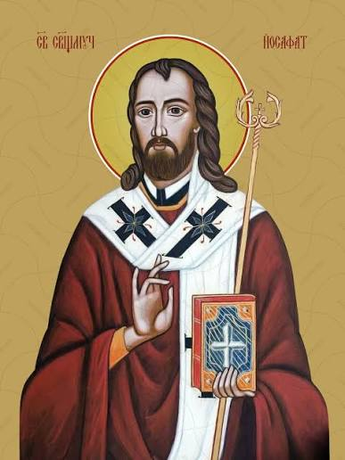

Покровитель нашого храму
Іван Кунцевич, який у чернецтві отримав ім'я Йосафат, народився 1580 року у Володимирі-Волинському в міщанській родині Гавриїла та Марії. Таїнство Хрещення він прийняв у місцевій церкві святої Параскеви П'ятниці. Саме у Володимирі минули його дитинство та юність. У 1596 році, коли Іванові було шістнадцять років, батьки віддали його до Вільна, де він мав навчатися купецького ремесла у відомого купця Якинта Поповича. Проте Іван не захотів присвятити своє життя торгівлі. Незважаючи на вмовляння свого наставника, він залишив купецьку справу, відчувши поклик до служіння Богові та прагнучи здобувати не земні багатства, а духовні чесноти.

У 1604 році Іван вступив до занедбаного монастиря Пресвятої Трійці у Вільні. Там Київський митрополит Іпатій Потій прийняв його до монашої спільноти та здійснив чернечий постриг. Відтоді він отримав ім'я Йосафат. У 1609 році митрополит Іпатій Потій висвятив Йосафата на священника. Своєю проповіддю, богословськими науками, добрим словом та милосердям він привертав багатьох людей до Київської Унійної Церкви. Його діяльність приносила значні плоди, однак викликала і сильний спротив противників Унії. Через те, що Йосафат своєю діяльністю сприяв наверненню багатьох людей до єдності з Католицькою Церквою, противники називали його «душехватом».
У 1613 році, за дорученням митрополита Вельямина Рутського, Йосафат став ігуменом Битенського монастиря. Через два роки, у 1615 році, його призначили єпископом-помічником Полоцької архиєпархії. Після смерті архиєпископа Гедеона у 1618 році Йосафат став Полоцьким архиєпископом. На цьому служінні він активно працював над духовним відновленням Церкви, дбав про освіту духовенства, поширення християнського вчення та утвердження церковної єдності.
12 листопада 1623 року, в неділю, Йосафат Кунцевич загинув мученицькою смертю. Його смерть стала свідченням вірності Христові та Церкві. Як свідчить церковна традиція, його мученицька смерть принесла справі церковної єдності ще більше плодів, ніж його багаторічне служіння за життя. 16 травня 1643 року Папа Урбан VIII проголосив Йосафата Кунцевича блаженним. Уже 12 листопада 1644 року в Римі вперше урочисто відзначили його літургійну пам'ять. А 29 червня 1867 року Папа Пій IX урочисто канонізував Йосафата Кунцевича, зарахувавши його до лику святих мучеників.
Великий мученику Христовий, Йосафате, чудовий взоре християнської досконалості і непереможний апостоле з'єднання Церков! Ти з любові до Бога не відказався ні від яких праць і трудів, і навіть радо пролляв кров і віддав своє життя. Благаємо тебе, святий покровителю й отче, заступайся за нас і випроси нам непохитності у святій католицькій вірі й ревності за спасіння наших власних душ, душ наших родин, знайомих і всіх людей.
Святий сященномученику Йосафате, згадай, що ти брат наш із крові й кості, тому заступайся в Бога за народ, з якого ти вийшов. Вчини, наш святий покровителю, своїми могутніми молитвами, щоб у всьому українському народі настала єдність у святій вірі, щоб усі стали дітьми одної Христової Церкви та щоб наш народ, збагачений дочасним й вічним благословенням, прославляв Бога, Який нагородив тебе нев'янучим вінком слави у Своєму Небесному Царстві, Якому належить слава, честь і поклін. Отцю і Сину і Святому Духові, нині і повсяк час, і на віки вічні. Амінь.